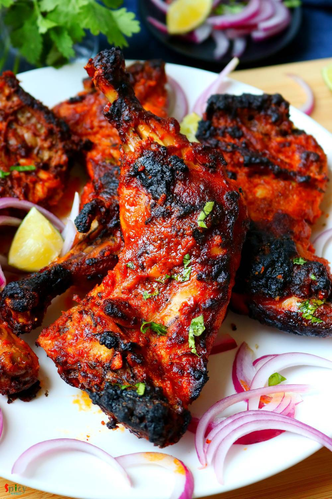

Simple and Easy Recipes
Tandoori Chicken
© 2016 Spicy World, Published on: Jan 18, 2020
This dish dont need any explanation. Its very popular in India and nowadays all over the world. There was a rumor that without "tandoor/oven" you cannot make tandoori. But believe me today I am sharing "oven method and stove top method" of making tandoori chicken. 'Tandoor' means oven made with clay and the heat comes from charcoal. In restaurants the actual tandoor flavour comes when juices of chicken drops on the charcoal, it creat a nice smokey flavor. You will fall in love with those charred, spicy chicken legs. Please give this recipe a try at your home and prove the rumor wrong!

Ingredients
- 4 Chicken leg quarters or 8 drumsticks.
- 4 Tablespoons of thick yogurt.
- Salt.
- 3 Tablespoons of fresh ginger and garlic paste.
- 4 Tablespoons of mustard oil.
- 4 Tablespoons of store bought tandoori masala or 1 Teaspoon each (roasted cumin and coriander powder, red chili powder, black pepper powder, kashmiri mirch powder, garam masala powder, dry fenugreek leaf powder).
- 3 Tablespoons of kashmiri chili powder.
- 2 Tablespoons of lemon juice.
- 1 Tablespoon of chat masala.
- 1 Tablespoon of dry fenugreek leaves.
- 3 Tablespoons of gram flour or besan.
- 2-3 Tablespoons of red chili powder.
- Some butter for basting.


Steps
Wash the chicken pieces and make some slits with sharp knife. Pat dry the chicken.
For the first marination, add ginger garlic paste, some salt, 1 Tablespoon of chili powder, 2 Tablespoons of kashmiri chili powder and lemon juice.
Mix well and keep aside for 1-2 hours.
Now take a mixing bowl. Add mustard oil.
Then add the remaining red chili powder, kashmiri red chili powder and tandoori masala. Mix it and let it rest for 20 minutes. From this you will get nice red color.
In a dry pan, put the gram flour. On medium flame keep stirring until the flour becomes golden. This besan will help the marination stick to chicken while baking.
Add this dry roasted gram flour (bhuna hua besan) into the spiced oil along with thick yogurt and some more salt. Mix well.
Now add the chicken pieces. Massage the chicken pieces with the second marinade very well with your hand. Cover the bowl and keep it in refrigerator for overnight or at least 4-5 hours.
For the smokey flavor, put a small steel bowl or aluminium foil in the chicken.
Then put a hot charcoal in that bowl. Pour little oil or ghee over it.
Smoke will come out, immediately cover the pan for 5 minutes. Chicken will absorb the smokiness.
Oven method:
Preheat your oven on highest temperature.
Place the marinated chicken pieces on a oven proof pan and put it in the oven for 20 minutes on 500F (highest temperature of your oven).
Take them out, turn the chicken pieces to other sides and broil (put them close to the filaments) them for 10 more minutes.
Take them out and apply some butter over them.
Stove top method:
Take a non stick skillet / pan. Heat it very well.
Put very little butter and spread all over the hot pan.
Now put the chicken pieces in the hot pan. Dont overcrowd the pan.
Cook each side for 15 minutes on medium flame. For the charred look, keep them on high heat for last 2-3 minutes.
Your tandoori chicken is ready to serve.
Serve this hot with salad and green chutney ..
")